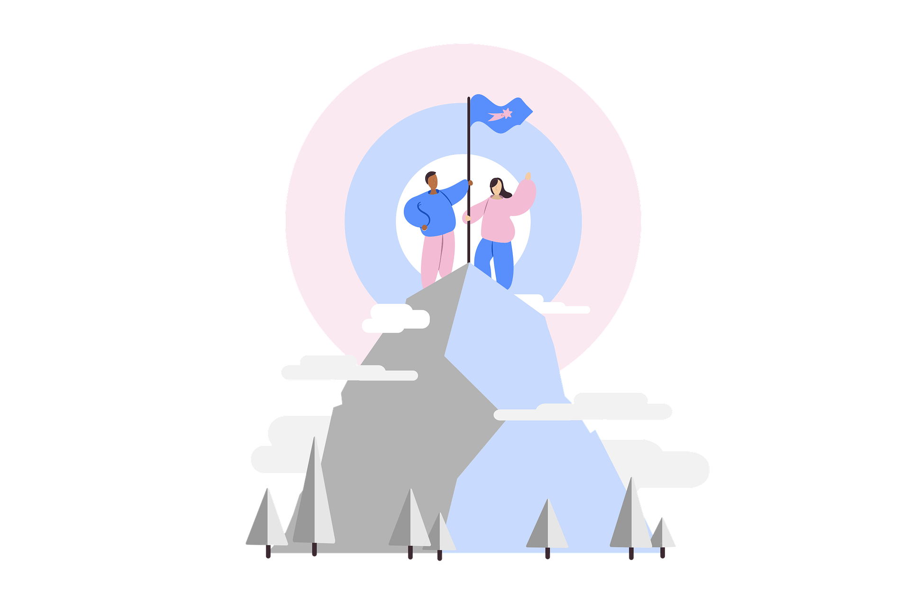
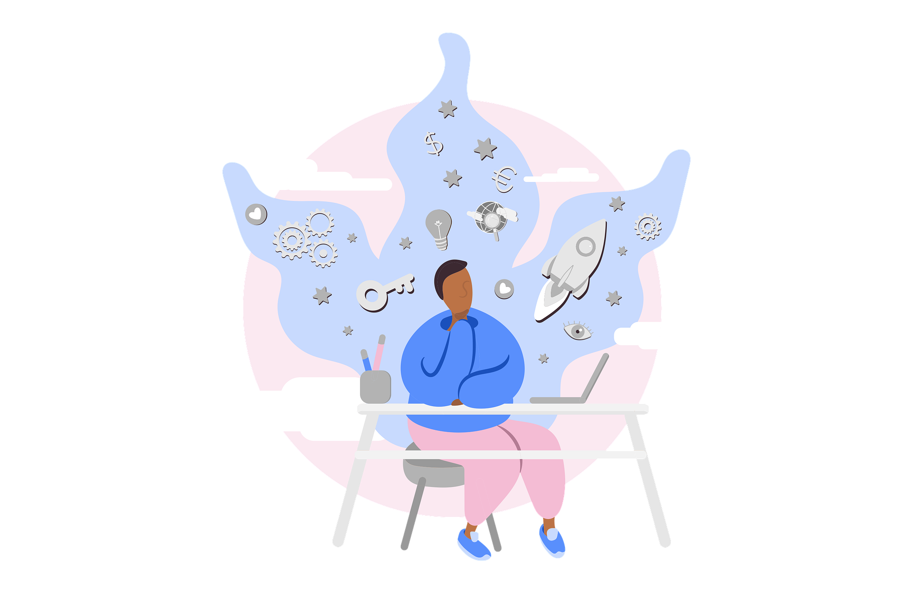
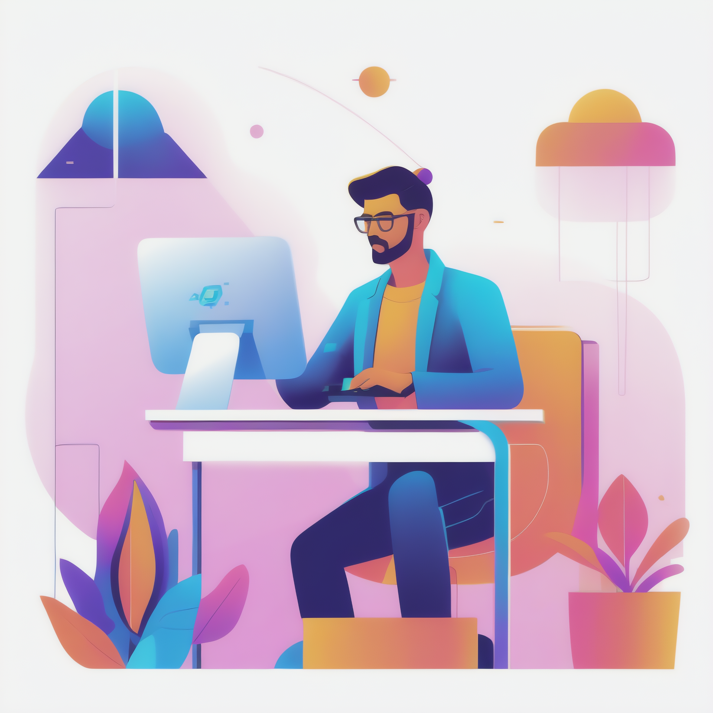
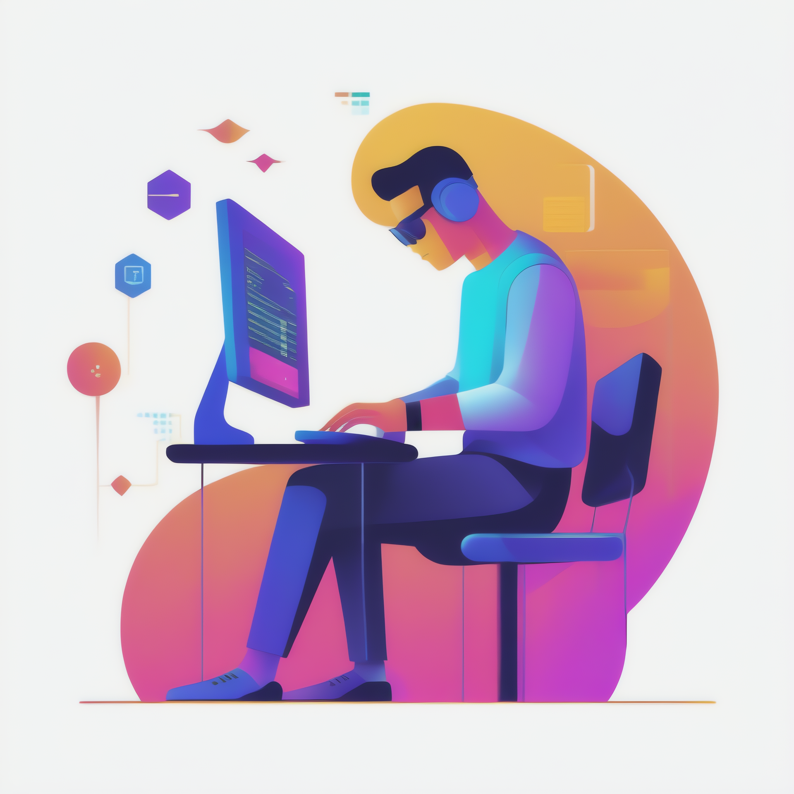

TER Quantum Machine Learning
Un projet de recherche universitaire
Le Projet
Le machine learning quantique est une discipline en pleine effervescence, située au croisement vertigineux entre la physique fondamentale et l’intelligence artificielle moderne. Derrière ses promesses se jouent des transformations radicales : une nouvelle façon de coder, de penser, de traiter l’information, au sein d’une logique non-classique.
Ce site s’inscrit dans une démarche de vulgarisation scientifique engagée. Il propose une reconstruction illustrée d’un article de recherche avancé, réimplémenté ligne par ligne dans un environnement Python, afin d’en éclairer la mécanique profonde et les tensions algorithmiques.
Chaque notebook est une étape d’ascension — du socle des fondamentaux jusqu’aux sommets expérimentaux. Ce projet trace le sentier d’une aventure intellectuelle où chaque ligne de code, chaque idée, chaque test devient une prise sur la paroi abrupte du savoir. L’objectif ? Élever la compréhension, rendre la science vivante, et offrir à chacun les outils pour gravir sa propre montagne algorithmique.

Présentation et portée du stage
Ce projet a été réalisé dans le cadre d’un stage universitaire de 10 semaines. Mon objectif était d’approfondir l’article cité ci-dessous en réimplémentant intégralement les modèles en Python, à partir de zéro, afin d’en tester la validité, d’analyser leur fonctionnement et de les rendre accessibles dans un cadre pédagogique.
« The Effect of Data Encoding on the Expressive Power of Variational Quantum Machine Learning Models »,
– Maria Schuld, Ryan Sweke et Johannes Jakob Meyer (arXiv, 2020)
L’ensemble de ce travail a été structuré sous forme de notebooks, organisés en modules progressifs, comme support de cours. Cette approche vise à favoriser la compréhension pas à pas, la reproductibilité des résultats, et l’acquisition de compétences pratiques en apprentissage machine quantique.
L’idée maîtresse qui a façonné ce projet repose sur un engagement inébranlable envers la clarté et la rigueur, tout en honorant la recherche originelle. Il ne s’agit pas de simplement reproduire des résultats, mais de s’immerger pleinement : apprendre avec curiosité, expérimenter sans crainte, et partager ouvertement chaque découverte. Chaque étape de ce travail reflète notre volonté d’aller au-delà du simple copier-coller scientifique pour faire naître une compréhension vivante et collective de l’innovation quantique.

Toute personne souhaitant partager ou citer un extrait de ce site doit obtenir l’accord explicite de l’auteur et indiquer clairement la source.
Malgré le soin apporté à la rédaction, des erreurs ou omissions peuvent subsister. L’auteur ne peut être tenu responsable des inexactitudes éventuelles.
Tous droits réservés. Ce principe s’applique à l’ensemble des contenus et sur l’intégralité du site, hors éléments expressément exclus ci-dessus.
Auteur : ggoutard
Contact : contact.ggoutard@gmail.com
Hébergeur :
GitHub, Inc.
88 Colin P Kelly Jr St, San Francisco, CA 94107, USA
Tél. : +1 415 200 4842
Modules & Doc Python
Cette section est le cœur actif du projet : un espace de ressources techniques, pensées pour expérimenter, comprendre et construire. On y trouve les notebooks du projet, véritables cartes topographiques de l’apprentissage quantique, ainsi que la documentation Python qui outille chaque étape du parcours. Ici, la théorie devient manipulation, l’idée devient programme, et le savoir devient outil.

Espace d'apprentissage
Une série de notebooks guidés, pensée comme une véritable ascension algorithmique — du socle des principes fondamentaux jusqu’aux hauteurs théoriques les plus audacieuses. Chaque module est conçu pour accompagner pas à pas l’apprenant dans sa découverte du machine learning quantique, à travers des expériences concrètes, des manipulations interactives, et des éclairages sur la logique profonde des modèles.
Voir les notebooks
Espace de programmation
Cette documentation regroupe les modules Python utilisés dans le projet, accompagnés d'instructions pour les installer et les comprendre. Elle permet de suivre la logique de chaque composant, d'explorer les fonctions essentielles et de saisir les fondements des circuits quantiques simulés. Il ne s’agit pas d’une interface interactive, mais d’un support technique structuré, pensé pour faciliter l’apprentissage et la reproduction des expérimentations.
Voir la documentationGalerie des modélisations
Créer votre simulation quantique
Passez de la théorie à la pratique en Python :
Rédigez, simulez et analysez vos qubits dans le cadre d’un cours destiné à construire votre propre simulateur quantique.
Fondations quantiques
Créez la classe Qubit et le dictionnaire de portes pour modéliser états, amplitudes et opérations unitaires.
Syntaxe & Parsing
Formalisez une notation linéaire pour vos circuits, développez un parser/lexer et générez la grille d’exécution.
Orchestration évolutive
Orchestrez l’application des portes, composez des primitives dynamiques et collectez les mesures pour analyser vos résultats.